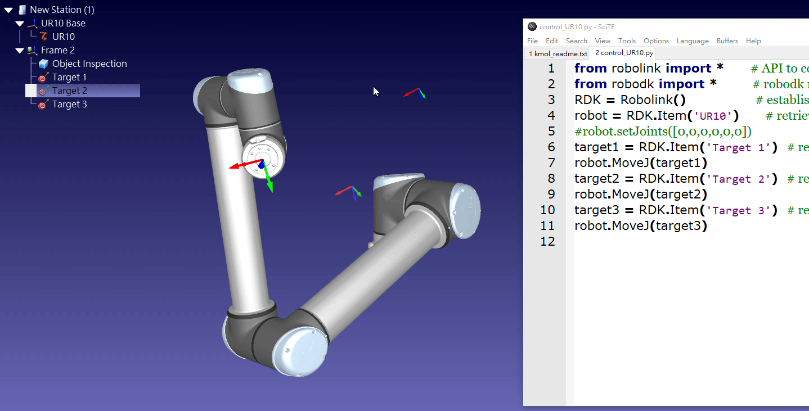

W5 <<
Previous Next >> Topic2
W7
Course notes:
Introduction to robotics
http://hades.mech.northwestern.edu/index.php/Modern_Robotics
Open Access related ebooks:
2018_Book_ControlTheoryTutorial.pdf
2021_Book_Cyber-PhysicalSystemsAModel-Ba.pdf
http://a.kmol.info:88/kmol2021_spring_v4_robodk.7z Python 3.9.2 與 RoboDK
http://a.kmol.info:88/kmol2021_spring_v4_robodk_webots.7z Python 3.9.2, RoboDK 與 Webots

ABB irb4600 robot
IRB4600_ROB0109EN_J_datasheet-Rev.L.pdf
IRB4600_product_manual_spare_parts.pdf
https://cyberbotics.com/doc/guide/irb4600-40
Coppeliasim ABB IRB4600-40-255 model
ABB IRB4600 Inventor model
以下利用 Python 3.9.2 程式控制 Robodk 5.2.2 版本中的 ABB IRB4600 機械手臂.
控制程式:
welding_ex1.py (from https://robodk.com/doc/en/PythonAPI/examples.html)
# ref: https://robodk.com/doc/en/PythonAPI/examples.html
'''
[ 1.000000, 0.000000, 0.000000, 30.000000 ;
0.000000, -1.000000, -0.000000, 50.000000 ;
0.000000, 0.000000, -1.000000, 50.000000 ;
0.000000, 0.000000, 0.000000, 1.000000 ];
'''
# This macro shows an example to draw a polygon of radius R and n_sides vertices using the RoboDK API for Python
from robolink import * # API to communicate with RoboDK for simulation and offline/online programming
from robodk import * # Robotics toolbox for industrial robots
# Any interaction with RoboDK must be done through RDK:
RDK = Robolink()
# New versions of RoboDK automatically add the current folder to the path (after 4.2.2)
path_stationfile = RDK.getParam('PATH_OPENSTATION')
# get the robot, frame and tool objects
robot = RDK.ItemUserPick('', ITEM_TYPE_ROBOT)
# get the current position of the TCP with respect to the reference frame:
# (4x4 matrix representing position and orientation)
target_ref = robot.Pose()
pos_ref = target_ref.Pos()
print("Drawing a polygon around the target: ")
print(Pose_2_TxyzRxyz(target_ref))
# move the robot to the first point:
robot.MoveJ(target_ref)
# It is important to provide the reference frame and the tool frames when generating programs offline
robot.setPoseFrame(robot.PoseFrame())
robot.setPoseTool(robot.PoseTool())
robot.setZoneData(10) # Set the rounding parameter (Also known as: CNT, APO/C_DIS, ZoneData, Blending radius, cornering, ...)
robot.setSpeed(200) # Set linear speed in mm/s
# Set the number of sides of the polygon:
n_sides = 6
R = 300
# make a hexagon around reference target:
for i in range(n_sides+1):
ang = i*2*pi/n_sides #angle: 0, 60, 120, ...
#-----------------------------
# Movement relative to the reference frame
# Create a copy of the target
target_i = Mat(target_ref)
pos_i = target_i.Pos()
pos_i[0] = pos_i[0] + R*cos(ang)
pos_i[1] = pos_i[1] + R*sin(ang)
target_i.setPos(pos_i)
print("Moving to target %i: angle %.1f" % (i, ang*180/pi))
print(str(Pose_2_TxyzRxyz(target_i)))
robot.MoveL(target_i)
#-----------------------------
# Post multiply: relative to the tool
#target_i = target_ref * rotz(ang) * transl(R,0,0) * rotz(-ang)
#robot.MoveL(target_i)
# move back to the center, then home:
robot.MoveL(target_ref)
print('Done')
W5 <<
Previous Next >> Topic2